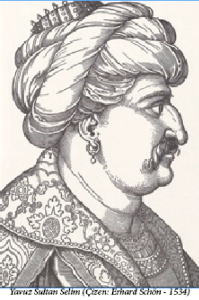
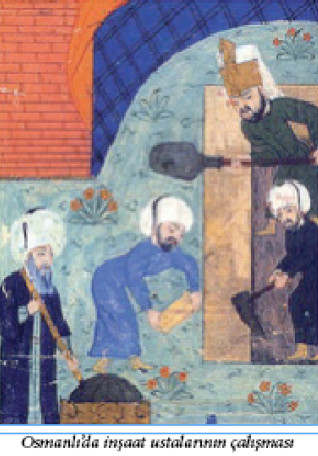

DÜNYANIN İLK BELEDİYE YASASI
Sultan II. Bayezid zamanında, 1502 yılında yürürlüğe giren kanun, Kanunname-i İhtisab-ı Bursa (Bursa Belediye Yasası) dünyanın bu alanda düzenleme yapan ilk ve en önemli yasal metinlerinden biridir. Bu fermanda hayvan ürünleri, türlü sebze-meyve, tuz, ekmek, sanayi ürünleri, tekstil ürünleri, tarım-tahıl ürünleri, orman ürünleri, deri ürünlerinin satışları, konulacak fiyatlar ve kaliteleri bir standarda bağlanmıştır.
Bu standartlardan bazıları şunlardır:
Çörekler: Ekmek ağırlığının yarısı olup, ak undan olacak ve unun bir kilesine bir okka (400 dirhem) yağ konulacak.
Meyveler: Kaplı (yeşil kabuklu) fındığın kaplı olarak bir okkası, bir akçeye olacak. Kapsızın 200 dirhemi, bir akçeye olacak ve mevsimi geçtikten sonra 125 dirhemi, bir akçeye olacaktır.
Sebzeler: Aş kabağına (taze kabak) üç gün narh olmayacak. Üç günden sonra üç okka, bir akçeye olacak. Haftasında 4 okka, ikinci haftasında 5 okka, üçüncü haftasında 6 okka, dördüncü haftada 8 okka, bir akçeye olacak.
Kuyumcular: Kullanılan gümüş 80 ayardan düşük olmayacak. Altının miskali de 60 akçelikten aşağı olmayacak.
İSTANBUL’DA KÜÇÜK KIYAMET
10 Eylül 1509’da İstanbul dünya tarihinin en şiddetli sarsıntılarından biri olduğu tahmin edilen bir depremle adeta yerle bir olmuştu. Halk arasında “kıyamet-i suğra” (küçük kıyamet) denilen depremde o zamanlar 160.000 nüfus ve 35.000 yerleşim birimine sahip olan İstanbul’da aralarında Osmanlı hanedanı üyelerinin de bulunduğu 13.000’den fazla insan ölmüş, on binlerce insan yaralanmış ve 1000’den fazla ev tamamen yıkılmış binlercesi de hasar görmüştür.
Tarihi Yarımada ve Pera’nın bazı bölgelerinde yerde yarılmalar, su ve kum fışkırmaları oluşmuş ve deprem ‘tsunami’ye neden olmuştur. Tsunami şehrin surlarını,
Galata ve Suriçi’ndeki birçok duvarı aşmış ve ağır hasara neden olmuştur.
Deprem o kadar büyüktü ki Edirne, Gelibolu ve İznik’te bile önemli hasarlar meydana getirmiş, hatta Yunanistan’dan Nil Deltası’na (Mısır) kadar geniş bir bölgede hissedilmiştir. Depremin artçısı olduğu zannedilen irili ufaklı çeşitli depremler de ta 1512 yılına dek sürdüğü bilinmektedir.
TÜRK VERGİSİ
Osmanlı Devleti’nin 1521’de Belgrad’ı, 1522’de Rodos’u fethetmesi ve 1526’da da Mohaç’ta zafer kazanmasının ardından batı dünyasında büyük bir panik yaşanmış ve çeşitli kentlerde toplanan Alman Meclisleri Türklere karşı ordu toplayıp sefer düzenleyebilmek için “Türk Vergisi” adı altında yeni bir vergi konulmasını kararlaştırmışlardı.
MEZARINDA BAŞI KESİLEN ŞEHZADE
Solakzade Tarihi’nden:
“Yavuz Sultan Selim kardeşi Şehzade Ahmet’in vücudunu ortadan kaldırttığı sırada Ahmet’in Murat ismindeki bir şehzadesi İran’a kaçmıştı. Dört yıl kadar İran’da kalan Şehzade Murat’ın o arada katledildiği ve katilin de bulunamadığı haberi gelmişti. Bir ara bu haberin doğru olmadığı, Şehzade Murat’ın gizlice Anadolu’ya girerek Amasya’ya geldiği ve etrafında bir takım adamlar toplayarak Anadolu’da bir ihtilâl çıkarmağa hazırlandığı söylendi. Yavuz Selim derhal gizli tahkikata girişti ve bu rivayetin ucu Amasya şehrinde bir nalbanda dayandı. Nalbant derhal tevkif edilerek İstanbul’a gönderildi, inkâr etmedi ve şöylece anlattı:
“Bir gün dükkânımda işimle meşgul idim. Bir derviş geldi, karşımda boynunu büküp içini çekti ve ah etti. Devamlı yüzüme bakardı ve bir şey söylemek ister görünürdü, birkaç gün bu manzara devam etti, nihayet acıdım: “Ey âşık! Yoksa bir sevgili yârinden mi ayrı düştün?” diye sordum.
Hemen gözlerinden yaş yerine kan boşandı: “Bir canımdan aziz yârim, munis vefakârım vardı, hastalandı, yatağa düştü, perişan oldum, içimden kan gider, bilmem ki o yârimin yüz parça olmuş yarasına ne çare edeyim. Senin garip dostu, mert bir insan olduğunu söylediler, senden iyilik umarak geldim. Senin Sultan Ahmet merhuma muhabbetin varmış, elbet onun garip düşmüş şehzadesine de acırsın.
Yâr-ı vefakârım dediğim Şehzade Murat’tır ki Acem diyarından çıktı geldi, ama ne çare ki gayet hastadır” dedi.
Ben de gittim, o civanı gördüm. Bitkin yatardı, hatırını sordum ve gönlünün dilediği yemekleri yaptırıp o derviş ile gönderdim. Şehzade ayağa kalktı ve memleketimin zenginlerinden Sabuncu İbrahim de çok yardımda bulundu. Benim bildiğim bundan ibarettir.
Nalbandın anlattığı Sabuncu İbrahim de getirildi o da inkâr etmedi: “Yol ihtiyaçlarını tedarik ettim, birkaç adamı ile İstanbul tarafına gitti.” dedi. Nihayet derviş de bulundu, Şehzade Murat’ın yanındaki diğer adamlar da bulundu, onlar da: “Beş on gün evvel, Üsküdar’da vefat etti, filân yere defnettik” dediler. Yavuz Sultan Selim emir verdi, adamlar gönderdi, gösterilen mezarı açtılar ve genç ölünün başını cesedinden ayırarak bir altın tabak içinde huzuruna getirdiler. Yavuz bu kesik başı eliyle muayene etti. Şehzade Murat’ın başında içinde ceviz sığabilecek bir çukur vardı, bu izi buldu ve Şehzade Murat’ın öldüğüne kesin emin oldu. Tutukluların hepsi, Yavuz gibi bir padişahın kendilerini sağ bırakmayacağını zannediyorlardı, hayatlarından ümitlerini kesmişlerdi. Fakat padişah ortada fiilî bir isyan hareketi olmadığına göre, sadece garip bir şehzadeye merhamet etmiş olan bu adamları affetti…”
YAVUZ’UN 1000 ALTINI
Solakzade Tarihi’nden bir alıntı daha:
“Yavuz Sultan Selim babasının zamanında Trabzon valisi iken bir derviş kıyafetine girip İran’a gider. Niyeti o memleketin durumunu kendi gözüyle görmektedir. Tebriz şehrinde misafir olduğu handa satranç oynayıp herkesi yenmeye başlayınca satranç meraklısı Şah İsmail’e haber verilir, o da dervişi huzuruna davet eder. Sultan Selim ilk oyunda hatır sayarak yenilir. Fakat ikinci oyunda Şah’ı mat eder. Şah kızar ve elinin tersiyle dervişin çıplak göğsüne vurarak: “Bre derbeder Âşık! Hiç şah olanlar mat edilir mi? Edebin yok imiş!” der ve Şehzade’ye bin altın hediye verir. Derviş huzurundan çıkıp atına bineceği sırada o bin altını kesesiyle beraber, kimseye göstermeden bir taşın altına saklar. Ertesi gece Tebriz’den kaçıp Trabzon yolunu tutar. Aradan yıllar geçer Yavuz Selim padişah olur. Şah İsmail’i Çaldıran’da mağlup ederek Tebriz şehrine girdikten sonra Şah’ın sarayına gider ve Sekbanbaşı Balyemez Osman Ağa’ya: “Osman Ağa! Şu kapı eşiğinde Şah’ın ata bindiği taşın altında kendi elimle koyduğum bin altın vardır, helâl maldır, sana hediye ettim!” der. Herkes hayretle bakışır. Osman Ağa taşı kaldırır, kesesi çürümüş, bin altın bir kor yığını halinde dururmuş…”
HİÇBİR OSMANLI PADİŞAHI
HACCA GİTMEMİŞTİR
Yavuz Sultan Selim’den, yani Sultan’ın Mısır Seferi sonucunda Hicaz’ın Osmanlı Devleti’ne katılmasından sonra, Osmanlı padişahları saç ve sakal tıraşı olduklarında kesilen kıllar dikkatle toplanır, bir altın leğen içinde gülsuyu ile yıkanır ve güzel bir çekmece içinde biriktirilirdi. Her yıl Hac zamanında, sürre-i hümayun ile İstanbul hacıları yola çıkarken bu çekmece sürre eminine teslim edilir, o da götürür, Medine’de Peygamberin kabri civarında bir yere defnederdi. İşin ilginç yanı, aynı zamanda bütün Müslümanların halifesi olan Osmanlı padişahları her yıl sakal ve saç kıllarını Hicaz’a gönderdikleri halde kendileri hacca gitmemişlerdir. Osmanlı hanedanından hacca giden tek kişi Fatih Sultan Mehmet’in küçük oğlu Cem Sultan’dır. Hanedan mensubu şehzadelerin de saray denetiminden uzak kalacakları ve siyasi bir etkinlik fırsatı bulabilecekleri endişesiyle hacca gitmelerine izin verilmemişti. Osmanlı padişahları hacca gitmek yerine, kendi yerlerine birden fazla vekil gönderdiler. Örneğin 1573’te hacda Osmanlı hanedanını II. Selim’in kızı Şah Sultan temsil etmekteydi.
Bugünün mantığıyla bakıldığında, eski dönemlerde 8-9 ay süren hac yolculuğu boyunca payitahtın başıboş bırakılması akıl alacak iş olmadığından dolayı, Osmanlı padişahlarının hiç hacca gitmemiş olmaları dinen değilse de, siyaseten çok anlaşılır bir durumdur…
BAZI VEZİRLERİN LAKAPLARI
Sultanlara lakap takılır da vezirlere takılmaz mı! Üstelik Osmanlı döneminde hoşgörü bugünkünden bile iyi olduğu için lakaplarda birçok hinlikler de sezilmektedir. İlginç lakaplı bazı vezir veya sadrazamlara göz atalım:
Öküz Kara Mehmet Paşa, Yemişçi Hasan Paşa, Zurnazen Mustafa Paşa, Tırnakçı Hasan Paşa, Cenaze (Meyyit) Hasan Paşa, Hain Ahmet Paşa, Kavanoz Ahmet Paşa, Güzelce Ali Paşa, Mere Hüseyin Paşa, Tabanıyassı Mehmet Paşa, Boynueğri Mehmet Paşa, Kalaylıkoz Ahmet Paşa, Kabakulak İbrahim Paşa, Bıyıklı Ali Paşa, Keçiboynuzu İbrahim Hilmi Paşa, Mezomorto Hüseyin Paşa, Yedisekiz Hasan Paşa, Kuyucu Murat Paşa, Daltaban Mustafa Paşa...
Bu gibi lakaplarla anılan vezirlerin hepsinin de birer hikayesi var. Örneğin Daltaban İbrahim Paşa saraya acemi oğlan olarak geldiğinde, daima yalınayak dolaştığı için kendisine ‘Daltaban’ lakabı takılmıştır. Öküz Mehmet Paşa bir öküz nalbandının oğlu olduğu için, Zurnazen Mustafa Paşa yeniçeri ocağında zurnacı olduğu için, Cenaze (Meyyit) Hasan Paşa sadrazamlığı boyunca hep hasta olduğu için, Hain Ahmet Paşa Osmanlı ordusunu Mısır Hıdivi’ne teslim ettiği için, Kavanoz Ahmet Paşa kısa ve şişman olduğu için, Güzelce Ali Paşa çok yakışıklı ve edepli bir adam olduğu için, Mere Hüseyin Paşa Arnavut olup sürekli Arnavutça “mere” lafını kullandığı için, Tabanıyassı Mehmet Paşa koca ayaklı ve düztaban olduğu için, Boynueğri Mehmet Paşa IV. Murat’ın Bağdat Seferi’nde boynundan zehirli okla vurulduğu için, Kalaylıkoz Ahmet Paşa babası kalaycı olduğu için, Kabakulak İbrahim Paşa koca kulaklı olduğu için, Bıyıklı Ali Paşa sadrazam olana dek sakal bırakmayıp bıyıklı olduğu için, Keçiboynuzu İbrahim Hilmi Paşa çok sıska olduğu için, Mezomorto Hüseyin Paşa Venediklilerle yapılan bir savaşta çok ağır yaralandığı halde ölmediği için (İtalyanca – mezzo morto: yarı ölü), Yedisekiz Hasan Paşa okuma yazması olmadığından imzasını sadece Arap rakamları olan yedi (V) ve sekiz () işaretlerini çizerek attığı için, Kuyucu Murat Paşa da Celali Ayaklanması sırasındaki asileri kuyulara doldurttuğu için bu lakapla anılmışlardır…
OSMANLI SADRAZAMLARININ “EN”LERİ
Yedi yüz yıl boyunca, bütün Osmanlı sadrazamlarının içinde uzun boy rekorunu Sokollu Mehmet Paşa kırmıştır: İki metreyi aşan bu büyük vezirin tarihimizdeki lakabı Tavil (Uzun) Mehmet Paşa’dır.
Osmanlı sadrazamları arasında şişmanlık rekoru da yine Kanunî Sultan Süleyman’ın sadrazamlarından Semiz Ali Paşa’dadır. O zamanlar bir cihan imparatorluğu olan ülkede Semiz Ali Paşa’yı taşıyabilecek ancak üç at bulunabilmişti.
Osmanlı sadrazamları arasında kısa boy rekoru da 17. yüzyıl ortalarında yaşayıp, IV. Mehmet’in vezirlerinden İpşir Mustafa Paşa ile II. Abdülhamit’in sadrazamı “Şapur Çelebi” lakaplı Küçük Sait Paşa’dadır.
Osmanlı tarihinde en kısa süre sadrazamlık yapan kişi IV. Mehmet dönemi sadrazamlarından Zurnazen Mustafa Paşa’dır. 5 Mart 1656 tarihinde sadrazamlığa getirilen Mustafa Paşa ayak divanındaki sipahilerin şiddetli itirazları sonucu 4 saat sonra sadrazamlıktan alınmış, yeniden Kaptan-ı Derya olmuştur.
PADİŞAHLAR VE ÇOCUKLARI
Osmanlı padişahları arasında en çok çocuğu olan padişah III. Murat’tır. Kız ve erkek çocuklarının sayısını tarihçiler 100 – 130 arasında verirler. Bunun biraz abartılı bir rakam olduğunu belirtsek de Osmanlı sultanlarının eşlerinden ve cariyelerinden çok sayıda çocuk sahibi oldukları bilinen bir gerçektir. Tarihsel kayıtlar eskilere gittikçe çok kesin olmamakla beraber, Osmanlı padişahları ve sahip oldukları çocuk sayıları şöyledir: Osman Gazi: 7 erkek, 1 kız; Orhan Gazi: 5 erkek, 1 kız; I. Murat (Hüdâvendigâr): 4 erkek, 2 kız; I. Bayezit (Yıldırım): 7 erkek, 1 kız; I. Mehmet (Çelebi): 5 erkek, 2 kız; II. Murat: 6 erkek, 2 kız; II. Mehmet (Fatih Sultan Mehmet): 4 erkek, 1 kız; II. Bayezit: 8 erkek, 6 kız; I. Selim (Yavuz Sultan Selim): 1 erkek, 4 kız; Kanuni Sultan Süleyman: 8 erkek, 2 kız; II. Selim: 7 erkek, 4 kız;
III. Murat: 20 erkek, 4 kız; III. Mehmet: 4 erkek; I. Ahmet: 11 erkek, 4 kız; II. Osman (Genç Osman): 2 erkek, 1 kız; IV. Murat: 4 erkek, 2 kız; I. İbrahim: 8 erkek, 5 kız; IV. Mehmet (Avcı): 3 erkek, 4 kız; II. Ahmet: 2 erkek, 3 kız; II. Mustafa: 9 erkek, 11 kız; III. Ahmet: 14 erkek, 23 kız; III. Mustafa: 2 erkek, 5 kız; I. Abdülhamit: 7 erkek, 9 kız; IV. Mustafa: 1 kız; II. Mahmut: 15 erkek, 12 kız; Abdülmecit: 18 erkek, 18 kız; Abdülaziz: 7 erkek, 7 kız; V. Murat: 1 erkek, 3 kız; II. Abdülhamit: 9 erkek, 7 kız; V. Mehmet Reşat: 3 erkek; VI. Mehmet Vahdettin: 1 erkek, 3 kız…
Osmanlı padişahlarından I.Mustafa, II. Süleyman, I. Mahmut, III. Osman ve III. Selim’in ise hiç çocukları olmamıştır.

OSMANLI’NIN İKİZ BEBEKLERİ
Osmanlı hanedanında (bildiğimiz kadarıyla) on kez ikiz doğum gerçekleşmiştir. 7 Ekim 1692 tarihinde II. Ahmet ve Rabia Hatun’un çocukları olarak dünyaya gelen İbrahim ve Selim hanedanın ilk ikizleri, 2 Aralık 1904’te Şehzade Mehmet Seyfettin Efendi ve Nervaliter Hatun’un çocukları olarak dünyaya gelen Ahmet Tevhit ve Fatma Gevheri hanedanın son ikizleridir. II. Mustafa, II. Mahmut, II Abdülhamit ikiz babası olan diğer padişahlardır. Ancak I. Abdülmecit’in iki kez, II. Ahmet’in ise üç kez ikiz babası olması gerçekten dikkate değerdir.
ZEMBİLLLİ ALİ EFENDİ
Sekizinci Osmanlı şeyhülislâmı olan Zembilli Ali Efendi dede soyu nedeniyle Ali Cemâlî ismiyle tanınmıştır. Zembilli Ali Efendi evinin penceresinden bir zembil2 sarkıtır, dinî konularda soruları olanlar, sorularını bir kağıda yazıp zembile koyardı. O da akşamları zembilini çekip soruların cevaplarını yazar, zembili tekrar sarkıtırdı. Bu nedenle “Zembilli Ali Efendi” namıyla meşhur oldu. Doğum tarihi bilinmemektedir, 1526 (Hicrî: 932) yılında İstanbul’da öldü, türbesi Zeyrek Yokuşu’ndadır.
2 Zembil: Hasırdan örülmüş, sepet benzeri saplı torba
YAVUZ SULTAN SELİM
Ataları hep sakal uzattıkları halde, Yavuz Sultan Selim sakalını keserdi. Bunun sebebini soranlara “Sakalımı ele vermemek için kesiyorum” dediği rivayet edilir. Bir kulağına da küpe takardı. Son dönemlerde Yavuz’un küpeli göründüğü resimlerin aslında Şah İsmail’e ait olduğu da iddia edilmektedir; ancak Yavuz’un küpe taktığını iddia edenler de, tersini iddia edenler de çok sağlam kanıtlara sahip değildir. Yavuz 22 Eylül 1520’de “aslan pençesi” denen bir çıban yüzünden, henüz 50 yaşında iken vefat etti.
BAKÎ KULLARI
Yavuz Sultan Selim döneminde kurulan “Bakî Kulları” adlı ekibin asıl görevi devlete borcu olanları gözaltına alarak, borcunu vermeye zorlamak, hatta gerekirse tutuklamaktı. Ekip ‘Başbakî Kulu’nun başkanlığında altmış kişiden oluşurdu. Tanzimat dönemine dek süregelen bu ekibin vergilerini ödemeyenleri hapsettikleri özel hapishaneleri bile vardı.
PARGALI’NIN ÇOCUKLARININ
SÜNNET DÜĞÜNÜ
Kanuni şehzadelerini muhteşem bir törenle sünnet ettirir. Kısa bir süre sonra da veziri Makbul İbrahim Paşa’nın (Pargalı İbrahim) oğlu sünnet olur. Törene Kanuni de davetlidir. Bir ara Kanuni, vezirine der ki: “Söyle bakalım İbrahim Paşa, senin tören mi daha muhteşem, benimki mi?”
Kanuni övgü beklerken gelen yanıt şaşırtıcıdır: “Elbette benimki sultanım.”
Kanuni şaşırır, nedenini sorunca vezir: “Sizin düğününüzün başmisafiri fakir bendenizdi, benim oğlanın düğününün başmisafiri ise cihan padişahı Kanuni Sultan Süleyman’dı” der…
MİMAR SİNAN’IN GEMİLERİ
Van Gölü’nde yüzen ilk Türk gemisi 16. yüzyılda Mimar Sinan tarafından yapılmıştır. 1533 yılında Kanuni Sultan Süleyman’ın İran Seferi sırasında Van Gölü’nde karşı kıyıya gitmek için Mimar Sinan iki haftada üç adet kadırga yapıp donatarak büyük itibar kazandı. Büyük sanatkâr o zaman yeniçeri ocağında dülgerlikteki hünerleriyle tanınmış basit bir neferdi.
İNTİHAR EDEN VEZİR PAŞA
İstanbul’da Yenibahçe civarında Mimar Sinan eseri olan Hüsrev Paşa Türbesi, Türk yapı sanatının çok güzel eserlerinden biridir. Türbede yatan Hüsrev Paşa, Kanunî devrinde kubbe vezirliği yapmış, ağırbaşlı ve haysiyet sahibi bir kişiymiş. Divanda Sadrazam Süleyman Paşa ile birbirlerine hançer sıyırmaya kadar varan şiddetli bir tartışma yüzünden azledilince kendisini derin bir üzüntüye kaptırmış. Sarayına kapanarak bir açlık grevine başlamış ve sonunda da ölmüştür. Hüsrev Paşa, Osmanlı tarihi boyunca bu suretle intihar eden tek simadır.
BİZ SENİ UYANIK BİLİYORDUK!
Kanuni devri Osmanlı döneminin en kıymetli zamanıdır. Hem maddi, hem de manevi anlamda Osmanlı Devleti doruk noktasındaydı. Böyle huzur dolu bir ortamda, bir gün kadının biri Kanuni’ye müracaat ederek evinin soyulduğunu belirtmiş ve hırsızın yakalanmasını istemişti. Padişah:
“Bre kadın, bu nasıl uyku ki evin soyuluyor da hiç haberin olmuyor?”deyince, kadın sakin ve rahat bir şekilde:
“Biz seni uyanık biliyorduk Sultanım, onun için bu kadar derin uyuduk” der. Yanındakiler Sultan’ın bu yanıt karşısında küplere bineceğini düşünse de, Kanuni bir anlık sessizlikten sonra, “Haklısın kadın” der ve kadının zararını kendi cebinden öder.
BU DA OSMANLI HERKÜL’Ü!
16. yüzyılın namlı ok atıcı pehlivanlarından Miriâlem Ahmet Ağa 75 yaşındayken bir gün okçular başına gidip ok ısmarlamıştı. Esnaftan bir delikanlı: “Pehlivan! İhtiyarladın artık! Kolunda yay çekecek kuvvet kaldı mı ki?”diye takılınca Ahmet Pehlivan da atını çarşının kapısına sürmüş, kapıdaki zincirlere kollarıyla asılmış ve bacaklarını atının karnına sarmıştı. Sonra kollarını kısınca kendisiyle beraber koca atı da yerden havaya kaldırmış ve gülerek: “Eh oğul, pazularımda azıcık bir şey kalmış gibi!” demişti. Ahmet Ağa’nın daha gencecik bir delikanlıyken memleketi olan Manisa’da odun yüklü bir eşeği bacaklarından tuttuğu gibi havaya kaldırdığı, yeni kesilmiş iki koyunu birer koluyla havada tutarak iki kasaba yüzdürdüğü bilinirse, bu yaptığı da şaşırtıcı olmasa gerek!
‘AVRAT PAZARI’ NE DEMEK OLA Kİ?
Bir zamanlar İstanbul’da satıcıların da müşterilerin de sadece kadınlardan oluştuğu ve “avrat pazarı” denen pazarlar kurulurdu. Cerrahpaşa’da, Kocamustafapaşa Caddesi boyunca, Arkadius Sütunu önünden Taşmektep’e, oradan da Bayrampaşa Medresesi ve Türbesi’ne çıkan Yağhane Sokağı’ndan Haseki Caddesi’ne kadar olan kocaman araziye avrat pazarı kurulduğu için sonraları o bölgenin adı da Avratpazarı olmuştur. Kanuni Sultan Süleyman’ın eşi Hürrem Sultan kendi adına hayrat yaptıracağı zaman da özellikle bu bölgeyi seçmişti.
OSMANLI DÖNEMİNDEN
BİR İNSAN HAKLARI BİLDİRİSİ
Kanuni Sultan Süleyman 1389 yılında Kosova Savaşı ile fethedilen Arnavutluk’a bağlı Belgrad Bölgesi’nde yaşayan halkın haklarının korunması için, 1558 yılında Belgrad Kadısı’na gönderdiği “Ferman”da şöyle buyurmaktadır:
“Devlet askerleri (Sipahiler), biçilmeyip el ile yolunan ottan zorla vergi alırlar imiş, kaldırdım. Askerler ev yakınında bulunan bağ, bahçe ve bostanlardan yemeklik için üretim yapanlardan para almak isterler imiş, almasınlar, yasakladım. Boş yerlere tarla açanlardan, ihya edenlerden vergi alınmasın. Nehir üzerlerindeki dolap ve karaca değirmenler, yeni yapılmış olsalar dahi fazla vergi alınmasın. Askerler, tarla ürünlerini satmak için, halka pazar yerine götürmelerini isterler imiş, pazara götürülmesin, teklif dahi edilmesin. Askerler ‘boyunduruk hakkı’ diye vergi almasınlar. Askerler savaşa gitseler, geride kalan mallarını köy halkından güvenilir adamlar korusunlar. Yeni evlenen askerlerden ‘gerdek hakkı’ diye vergi alınır imiş, bundan böyle alınmasın. Savaş esnasında bile askerler eve girip arı kovanlarına dokunmasınlar. Ve yerleştiği yerde, evleri önünde, sancakları altında kendi geçimleri için ürettikleri arı kovanından dahi vergi alırlar imiş. Onu dahi göresin. Başka kovanlık olmayıp, evleri yanında ve sancakları altında olan kovandan dahi vergi aldırmayasın. Kovan hakkı bahanesi ile askerler savaş esnasında bile bu bahaneyle evlere girmekten men eylensin. Bu husus için şikayet ettirmeyesin.”
ESKİ ZAMANLARDA ESİR TİCARETİ
Osmanlı, esirliği ve esir ticaretini kaldıran uluslararası anlaşmayı tanıyıncaya kadar, İstanbul’da ki büyük Esir Hanı ve Esir Pazarı, Nuruosmaniye Camii’nin Tavukpazarı tarafında idi. Daha doğrusu, bu cami 18. yüzyılın ikinci yarısında Esir Hanı yanında inşa edilmişti. Oğlan ve kız, köle ve cariye alım satımı türlü uygunsuzluklara, fuhşa müsait olduğu için, esircilik kefalete bağlanmış, esirciler sıkı devlet kontrolü altında tutulmağa çalışılmış, buna rağmen çeşitli edepsizlikler olmuş ve zaman zaman şiddetli tembihler, yasaklar çıkmıştır. Kadın veya erkek esirciler ile esir tellallarının edepsizleri tarafından yapılıp da 16., 17. ve 18. yüzyıllarda İstanbul Kadılığı’na gönderilen fermanlardan öğrendiğimiz başlıca uygunsuzluk, sahibi tarafından satılan köle ve cariyeleri ucuza kapatmaktı, fakat asıl korkunç yanları mesleklerini fuhşa vasıta yapmalarıydı. Kendi ellerindeki taze dul cariyelerle sakalı bıyığı bitmemiş köleleri yüksekçe bir para karşılığında bekâr odalarına götürüp birkaç gün kapattırırlar, haber alınıp da zabıtaca sorguya çekildiklerinde: “Esire talip oldu, pey akçesini3 verdi, beğenmedi, peyden geçip geri getirdi, günahımız yoktur, usul budur” derlerdi.
3 Pey akçesi: Peşinat parası.
Bazı kadın esirciler ve özellikle esir tellalları da evleri ve konakları dolaşırlar, güzel ve bakımlı cariyeler için değerinden kat kat üstün bir fiyat vererek; “Bir zengin efendi cariye ister, satıverelim” diye sahip veya sahibesinin tamahını tahrik ederler, bir miktar pey akçesine kızı alırlardı. İstanbul’da ticaretle meşgul zengin Hristiyanlara, Polonya ve Boğdan elçilerine götürürler, büyük bir ücret karşılığında kızı birkaç gün kapatırlar, kıza da sus hakkı bir küpe veya yüzük alıverirler, sonra yerine iade edip: “Huyunu veya kaşını gözünü beğenmedi, peyinden vazgeçti, kıza da

bir küpe aldı” derlerdi.
1559 (Hicrî: 967) yılında, gayrimüslimlerin esir ve azatlı köle kullanması kesin olarak yasak edildi. Bu yılın Safer4 ayında İstanbul Kadılığı’na gönderilen bir ferman ile gayrimüslimlerin yanında bulunan azatlı veya esir köle cariyelerin tespiti emredildi. Sonra aynı yılın Cemaziyel Ahir’inde5 çıkan ikinci bir fermanla gayrimüslimler yanındaki esirlerin bedeli karşılığında sahiplerinden alınarak Müslümanlara satılması ve azatlıların da Müslümanlar yanında çalışmalarının temini emredildi. Bu tarihten itibaren gayrimüslimler köle ve cariye kullanamadılarsa da, yukarıda anlatılan uygunsuz esirciler ve esir tellâlları aracılığıyla nihayet birkaç gece için meşreplerine uygun ve kendi kalplerini hoş edecek köle ve cariye bulmakta sıkıntı çekmediler.